Mevcut oranlar
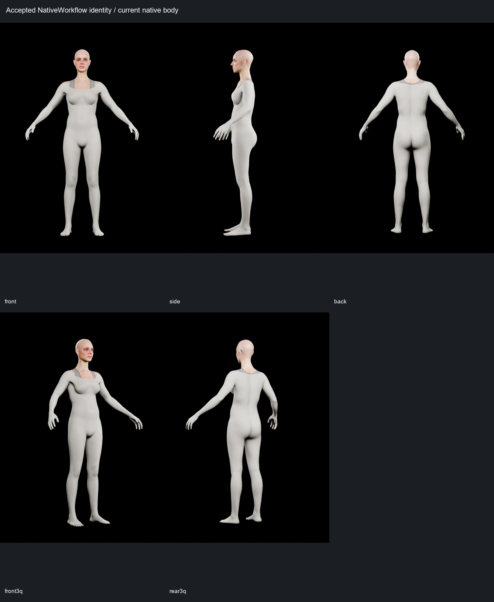
idle
Belirgin yeni çökme veya birleşim açılması görülmedi.
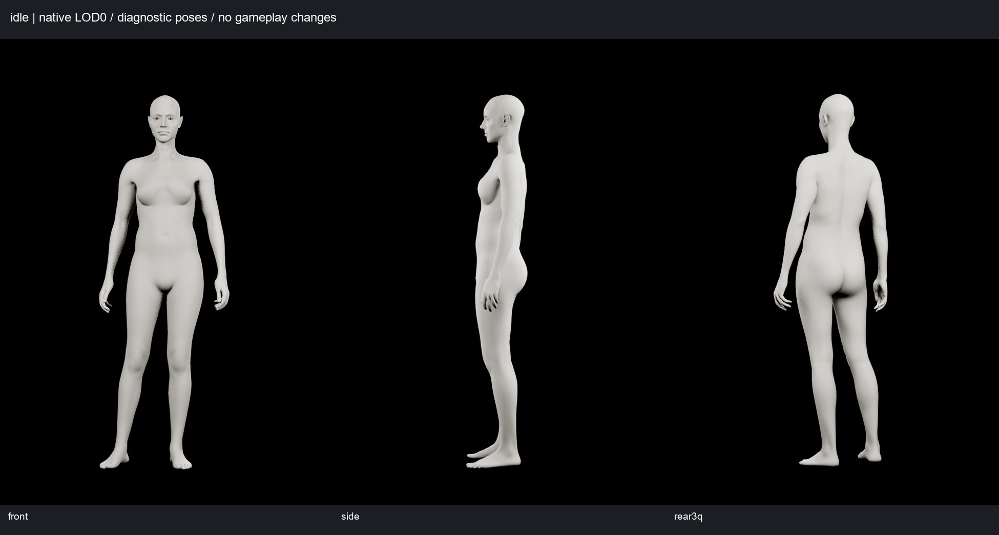
walk
Ana poz ve iki ek döngü örneğinde gövde/pelvis bağlantısı tutarlı.
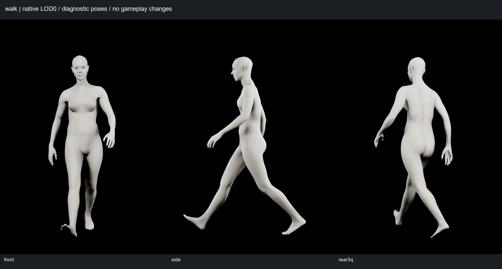
jog
Ana poz ve iki ek örnekte omuz, bel ve kalça bağlantısı tutarlı.
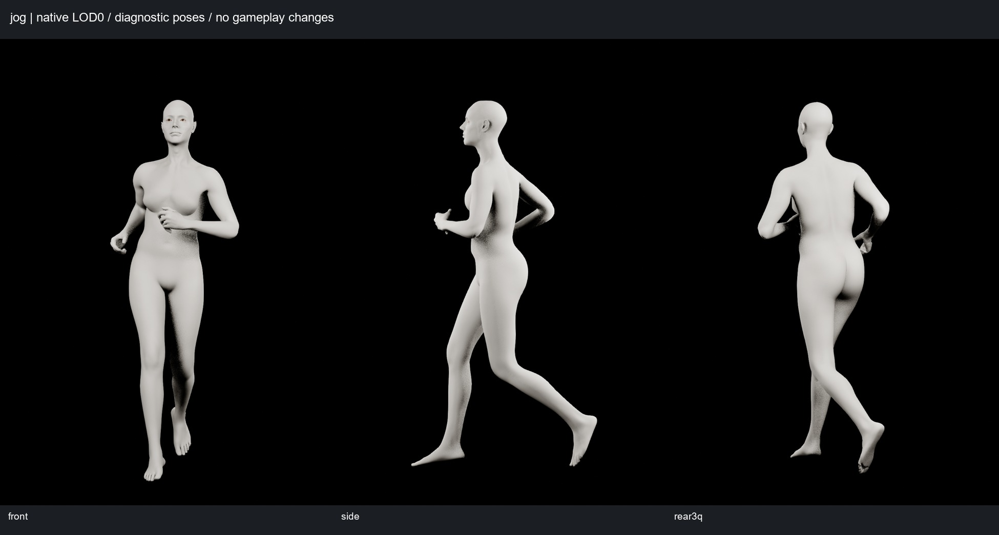
sprint
Ana poz ve iki ek örnekte kopma görülmedi; hareket/ayak teması sertifikasyonu değildir.
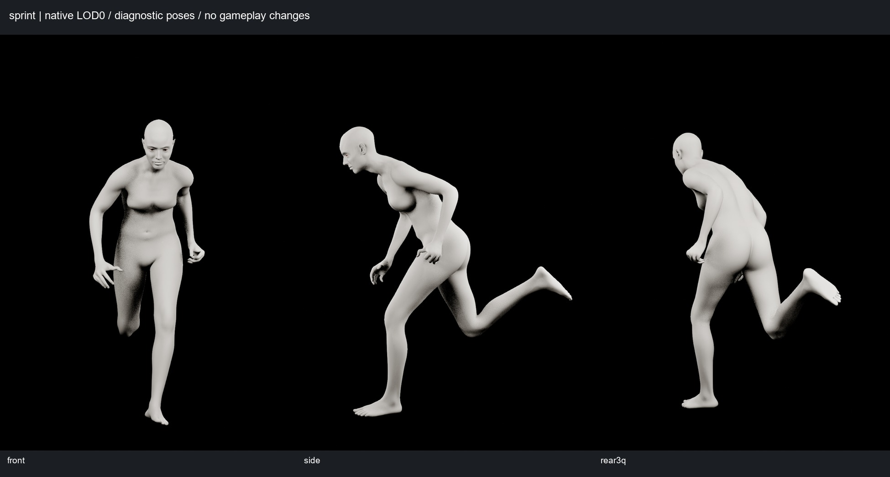
crouch
Ön, yan ve arka 3/4 görünüşte diz/kalça sürekliliği kabul edilebilir.
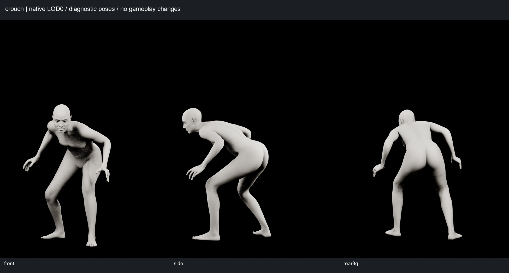
jump
Ana poz üç açıdan tam kadrajla incelendi. Ek 1.0 s karesinde baş üstü kadraj dışında; bu ek kare baş değerlendirmesinde kullanılmadı.
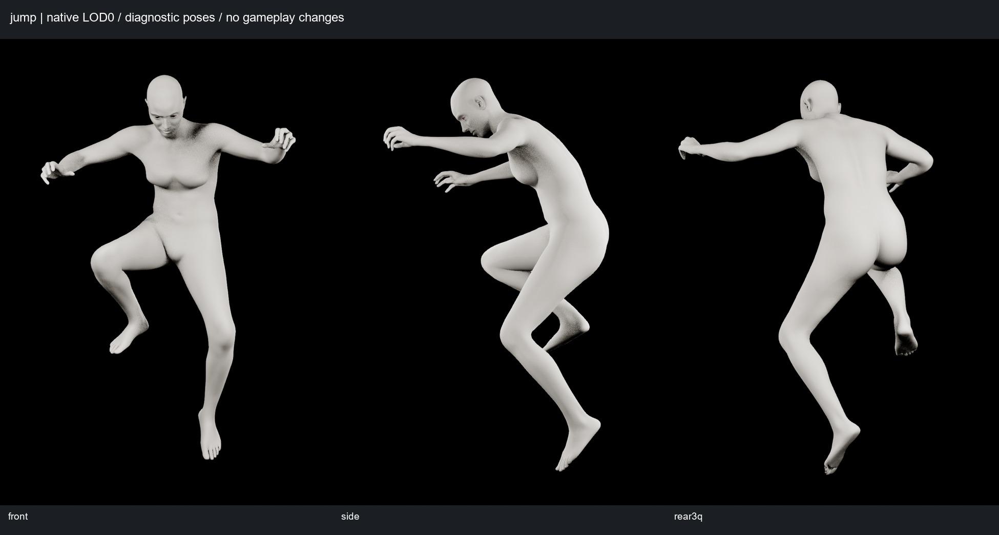
arms_raised
PARTIAL: omuz üstü / trapez-üst göğüs geçişi sert, kanat benzeri çıkıntı yapıyor. Yırtık veya boyun açıklığı değil.
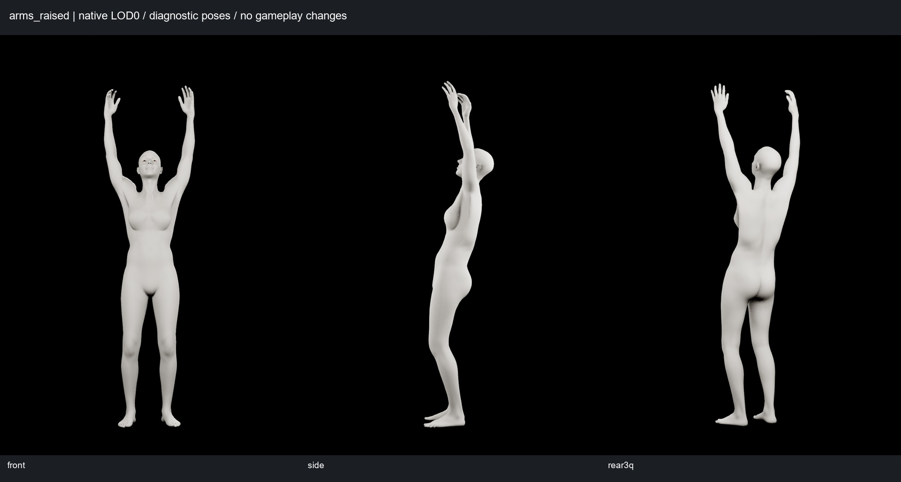
arms_forward
Kollar öne uzanmış gerçek ROM pozu (21.5 s); ön/yan/arka 3/4, omuz ve sırt yakın planları incelendi.
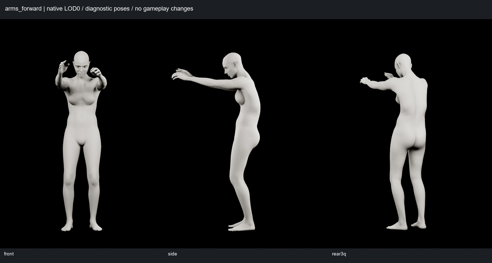
shoulder_rotation
PARTIAL: arka boyun/trapezde düzlemsel bant hissi. Sınır pozisyonu ve normalleri uyuşuyor; yüzey formu kalite sınırı.
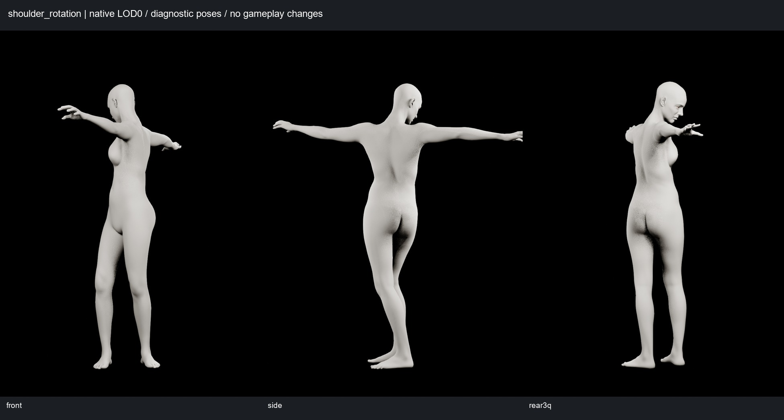
torso_twist
Bel, kaburga ve pelvis sürekliliğinde belirgin yeni kopma/çökme görülmedi.
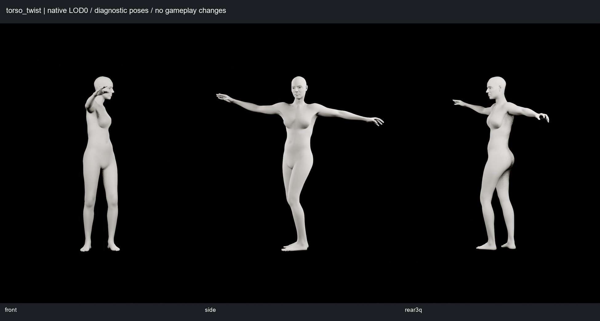
hip_flexion
Derin gövde/kalça fleksiyonunda ön/yan/arka 3/4 incelendi; birleşim temiz.
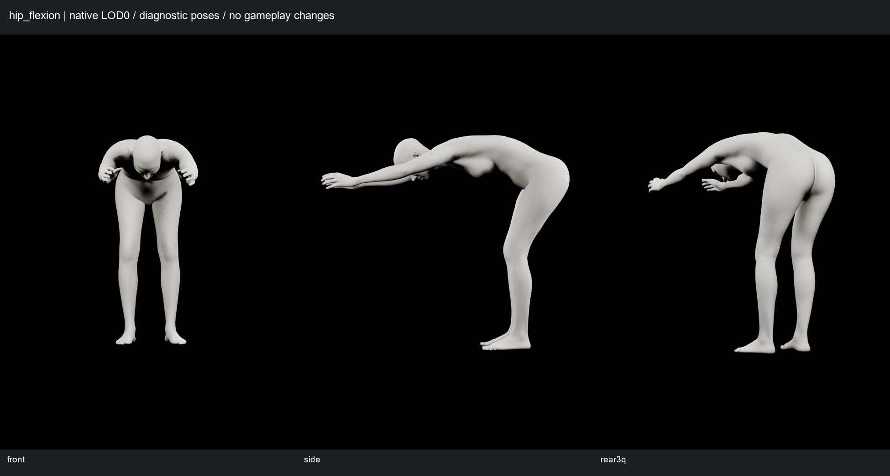
deep_squat
Gerçek derin çömelme; diz ve kalça yüksek fleksiyonda. Görünür büyük yırtık, kopma veya pelvis çökmesi yok.
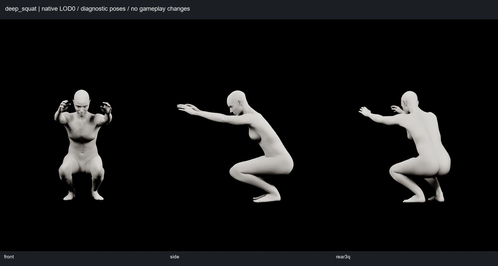
Tanı: native düzeltici açık / kapalı
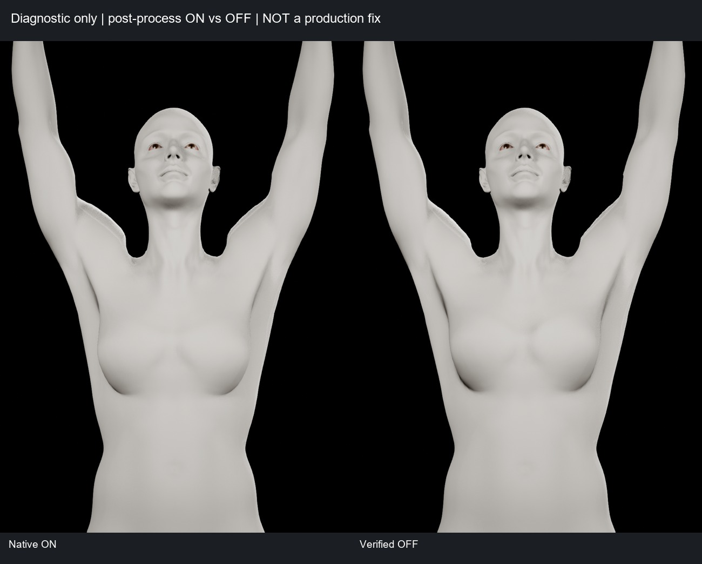